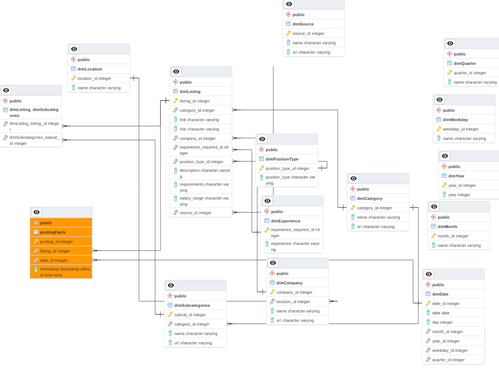

It this project we'll gather data from one of the largest job posting sites in Israel. We'll
then transform the data and load it into our database. From there we will issue some SQL queries
to gather some valuable insights. We will also use the gathered data to create charts and visualisations
using BI software.

First of all we have to think about our database design, dimensional and fact tables we want to see in our database and relations beween the tables.
Here we will design our database, create tables and relations between them. The database will follow the Star design pattern. Read more
We will then extract raw data from our source using Python libraries like Selenium and BeautifulSoup to achieve our goal. The information will be and stored in CSV files. We start with extracting categories and sub-categories and proceed with getting listings information. Read more
At this step of the process we will transform the data we have in the CSV files. We will extract phone numbers from the job description and insert the numbers into a new column. We will also strip unnecessary spaces from the dates. Read more

In this part of the project we will read job listing details from the CSV file we created during the transform step and load all the data into corresponding tables of our PostgreSQL database. Read more
Here we will create some SQL queries to gather interesting facts about our data.
Data visualization with Tableau Public. We will visualize the following date: Vacancies by location, Job openings by Category, Top 20 hiring companies, Experience required in IT by Category.